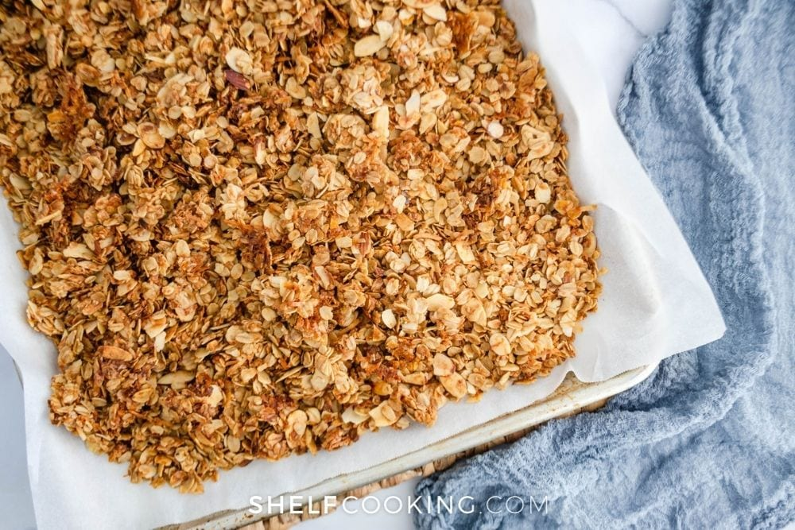

Maple Cinnamon Granola

Description
Ryan's homemade maple cinnamon granola recipe is a very simple yet satisfying take on the classic snack. Utilizing only organic maple syrup as a sweetener, it is one of the cleaner recipes out there. With olive oil, salt, and cinnamon it provides a semi-sweet semi-savory flavor that is perfect for accompanying fruit.
Ingredients
- 2 1/2 cup oats
- 1 1/2 cup almonds
- 1/2 tbsp cinnamon
- 1 tsp salt
- 1/4 cup olive oil
- 1/2 cup organic maple syrup
- 1/2 tbsp vanilla extract
- Pulse almonds in a food processor until comprised of small chunks
- Whisk together oats, almonds, cinnamon, and salt in medium mixing bowl
- Mix together wet ingredients in separate small mixing bowl taking care to fully blend together
- Pour wet ingredients on top of dry ingredients. Mix together with rubber scraper until uniform coverage is achieved.
- Spread mixture flat and evenly onto large baking sheet with parchment paper
- Bake at 350 degrees for 30 minutes. Remove from oven and let cool for 15 minutes before breaking apart.